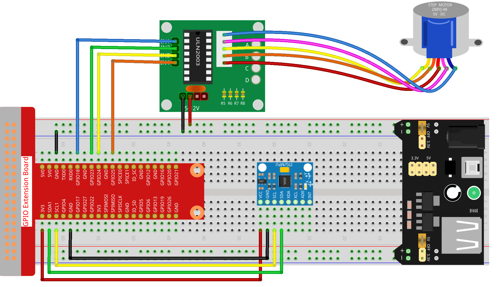

Bemerkung
Hallo und willkommen in der SunFounder Raspberry Pi & Arduino & ESP32 Enthusiasten-Gemeinschaft auf Facebook! Tauchen Sie tiefer ein in die Welt von Raspberry Pi, Arduino und ESP32 mit anderen Enthusiasten.
Warum beitreten?
Expertenunterstützung: Lösen Sie Nachverkaufsprobleme und technische Herausforderungen mit Hilfe unserer Gemeinschaft und unseres Teams.
Lernen & Teilen: Tauschen Sie Tipps und Anleitungen aus, um Ihre Fähigkeiten zu verbessern.
Exklusive Vorschauen: Erhalten Sie frühzeitigen Zugang zu neuen Produktankündigungen und exklusiven Einblicken.
Spezialrabatte: Genießen Sie exklusive Rabatte auf unsere neuesten Produkte.
Festliche Aktionen und Gewinnspiele: Nehmen Sie an Gewinnspielen und Feiertagsaktionen teil.
👉 Sind Sie bereit, mit uns zu erkunden und zu erschaffen? Klicken Sie auf [hier] und treten Sie heute bei!
3.1.6 Bewegungssteuerung
Einführung
In dieser Lektion werden wir ein einfaches Bewegungserkennungs- und -steuerungsgerät erstellen. Der MPU6050 wird als Sensor und der Schrittmotor als gesteuertes Gerät verwendet. Mit dem MPU6050, der am Handschuh befestigt ist, können Sie den Schrittmotor durch Drehen Ihres Handgelenks steuern.
Benötigte Komponenten
Für dieses Projekt benötigen wir die folgenden Komponenten.

Schaltplan
T-Karte Name |
physisch |
wiringPi |
BCM |
GPIO18 |
Pin 12 |
1 |
18 |
GPIO23 |
Pin 16 |
4 |
23 |
GPIO24 |
Pin 18 |
5 |
24 |
GPIO25 |
Pin 22 |
6 |
25 |
SDA1 |
Pin 3 |
||
SCL1 |
Pin 5 |

Versuchsdurchführung
Schritt 1: Bauen Sie die Schaltung auf.
Schritt 2: Öffnen Sie die Code-Datei.
cd ~/davinci-kit-for-raspberry-pi/python-pi5
Schritt 3: Ausführen.
sudo python3 3.1.6_MotionControl_zero.py
Während der Code ausgeführt wird, wenn der Neigungswinkel des MPU6050 auf der Y-Achse größer als 45 ℃ ist, rotiert der Schrittmotor gegen den Uhrzeigersinn; wenn er weniger als -45 ℃ beträgt, rotiert der Schrittmotor im Uhrzeigersinn.
Warnung
Wenn die Fehlermeldung RuntimeError: Cannot determine SOC peripheral base address angezeigt wird, lesen Sie bitte Wenn gpiozero nicht funktioniert.
Code
Bemerkung
Sie können den unten stehenden Code Ändern/Zurücksetzen/Kopieren/Ausführen/Stoppen. Bevor Sie das tun, müssen Sie zum Quellcodepfad wie davinci-kit-for-raspberry-pi/python-pi5 gehen. Nachdem Sie den Code geändert haben, können Sie ihn direkt ausführen, um die Wirkung zu sehen.
#!/usr/bin/env python3
from gpiozero import OutputDevice
import smbus
import math
import time
# Initialisierung der Leistungsverwaltungsregister für MPU6050
power_mgmt_1 = 0x6b
power_mgmt_2 = 0x6c
# Einrichten der I2C-Kommunikation mit MPU6050
bus = smbus.SMBus(1) # SMBus initialisieren
address = 0x68 # I2C-Adresse des MPU6050
bus.write_byte_data(address, power_mgmt_1, 0) # MPU6050 aufwecken
# Initialisieren der Motorpins zu den GPIO-Pins 18, 23, 24, 25
motorPin = [OutputDevice(pin) for pin in (18, 23, 24, 25)]
# Setzen der Motor-Drehgeschwindigkeitsparameter
rolePerMinute = 15
stepsPerRevolution = 2048
# Berechnen der Verzögerung zwischen Schritten für die gewünschte U/min
stepSpeed = (60 / rolePerMinute) / stepsPerRevolution
# Einzelnes Byte von der angegebenen I2C-Adresse lesen
def read_byte(adr):
return bus.read_byte_data(address, adr)
# Wort (2 Bytes) von der angegebenen I2C-Adresse lesen
def read_word(adr):
high = bus.read_byte_data(address, adr)
low = bus.read_byte_data(address, adr + 1)
val = (high << 8) + low
return val
# Wort in 2's-Komplement-Form lesen
def read_word_2c(adr):
val = read_word(adr)
if val >= 0x8000:
return -((65535 - val) + 1)
else:
return val
# Euklidischer Abstand zwischen zwei Punkten berechnen
def dist(a, b):
return math.sqrt((a * a) + (b * b))
# Y-Achsenrotation berechnen
def get_y_rotation(x, y, z):
radians = math.atan2(x, dist(y, z))
return -math.degrees(radians)
# X-Achsenrotation berechnen
def get_x_rotation(x, y, z):
radians = math.atan2(y, dist(x, z))
return math.degrees(radians)
# Neigungswinkel von MPU6050 abrufen
def mpu6050():
accel_xout = read_word_2c(0x3b)
accel_yout = read_word_2c(0x3d)
accel_zout = read_word_2c(0x3f)
accel_xout_scaled = accel_xout / 16384.0
accel_yout_scaled = accel_yout / 16384.0
accel_zout_scaled = accel_zout / 16384.0
angle = get_y_rotation(accel_xout_scaled, accel_yout_scaled, accel_zout_scaled)
return angle
# Steuerung der Schrittmotor-Drehung
def rotary(direction):
if direction == 'c':
# Sequenz für die Drehung im Uhrzeigersinn
for j in range(4):
for i in range(4):
if 0x99 >> j & (0x08 >> i):
motorPin[i].on()
else:
motorPin[i].off()
time.sleep(stepSpeed)
elif direction == 'a':
# Sequenz für die Drehung gegen den Uhrzeigersinn
for j in range(4):
for i in range(4):
if 0x99 << j & (0x08 >> i):
motorPin[i].on()
else:
motorPin[i].off()
time.sleep(stepSpeed)
# Hauptschleife zum kontinuierlichen Lesen des Neigungswinkels und Steuern des Motors
try:
while True:
angle = mpu6050()
if angle >= 45:
rotary('a') # Gegen den Uhrzeigersinn für positiven Neigungswinkel drehen
elif angle <= -45:
rotary('c') # Im Uhrzeigersinn für negativen Neigungswinkel drehen
except KeyboardInterrupt:
# Alle Motorpins bei Tastaturunterbrechung ausschalten
for pin in motorPin:
pin.off()
Code-Erklärung
Das Skript beginnt mit dem Importieren erforderlicher Bibliotheken.
gpiozerowird für die Steuerung der GPIO-Pins verwendet,smbusfür die I2C-Kommunikation,mathfür mathematische Operationen undtimefür Verzögerungen.#!/usr/bin/env python3 from gpiozero import OutputDevice import smbus import math import time
Richten Sie die I2C-Kommunikation mit dem MPU6050-Sensor ein.
power_mgmt_1undpower_mgmt_2sind Register zur Verwaltung der Stromversorgung des Sensors. Der Sensor wird durch Schreiben inpower_mgmt_1„aufgeweckt“.# Initialisieren der Leistungsverwaltungsregister für MPU6050 power_mgmt_1 = 0x6b power_mgmt_2 = 0x6c # Richten Sie die I2C-Kommunikation mit MPU6050 ein bus = smbus.SMBus(1) # Initialisieren Sie SMBus address = 0x68 # I2C-Adresse von MPU6050 bus.write_byte_data(address, power_mgmt_1, 0) # Wecken Sie MPU6050 auf
Initialisiert die GPIO-Pins (18, 23, 24, 25) auf dem Raspberry Pi zur Steuerung des Schrittmotors. Jeder Pin ist mit einer Spule im Motor verbunden.
# Initialisieren Sie Motorpins für GPIO-Pins 18, 23, 24, 25 motorPin = [OutputDevice(pin) for pin in (18, 23, 24, 25)]
Legt die Umdrehungen pro Minute (RPM) des Motors und die Anzahl der Schritte pro Umdrehung fest.
stepSpeedberechnet die Verzögerung zwischen Schritten, um die gewünschte RPM zu erreichen und einen reibungslosen Motorbetrieb sicherzustellen.# Setzen Sie Parameter für die Motordrehzahl rolePerMinute = 15 stepsPerRevolution = 2048 # Berechnen Sie die Verzögerung zwischen den Schritten für die gewünschte RPM stepSpeed = (60 / rolePerMinute) / stepsPerRevolution
Diese Funktionen werden für die I2C-Kommunikation verwendet.
read_byteliest ein einzelnes Byte von einer bestimmten Adresse, währendread_wordzwei Bytes (ein Wort) von der Adresse liest und sie mit bitweisen Operationen (<<und+) zu einem einzelnen Wert kombiniert.# Lesen Sie ein einzelnes Byte von der angegebenen I2C-Adresse def read_byte(adr): return bus.read_byte_data(address, adr) # Lesen Sie ein Wort (2 Bytes) von der angegebenen I2C-Adresse def read_word(adr): high = bus.read_byte_data(address, adr) low = bus.read_byte_data(address, adr + 1) val = (high << 8) + low return val
Diese Funktion konvertiert das gelesene Wort in eine 2’s-Komplement-Form, die nützlich ist, um Vorzeichenwerte aus Sensordaten zu interpretieren. Diese Umwandlung ist notwendig, um negative Sensormessungen zu verarbeiten.
# Lesen eines Wortes in 2's-Komplement-Form def read_word_2c(adr): val = read_word(adr) if val >= 0x8000: return -((65535 - val) + 1) else: return val
distberechnet die euklidische Entfernung zwischen zwei Punkten, die in den Rotationsberechnungen verwendet wird.get_y_rotationundget_x_rotationberechnen die Rotationswinkel entlang der Y- bzw. X-Achse, indem sie dieatan2-Funktion aus dermath-Bibliothek verwenden und das Ergebnis in Grad umrechnen.# Berechnen der euklidischen Entfernung zwischen zwei Punkten def dist(a, b): return math.sqrt((a * a) + (b * b)) # Berechnen der Y-Achsenrotation def get_y_rotation(x, y, z): radians = math.atan2(x, dist(y, z)) return -math.degrees(radians) # Berechnen der X-Achsenrotation def get_x_rotation(x, y, z): radians = math.atan2(y, dist(x, z)) return math.degrees(radians)
Diese Funktion liest die Beschleunigungsdaten vom MPU6050-Sensor, skaliert die Messungen und berechnet den Neigungswinkel mithilfe der Funktion
get_y_rotation. Die Funktionread_word_2cliest Sensordaten in 2’s-Komplement-Form, um negative Werte zu verarbeiten.# Holen Sie sich den Neigungswinkel von MPU6050 def mpu6050(): accel_xout = read_word_2c(0x3b) accel_yout = read_word_2c(0x3d) accel_zout = read_word_2c(0x3f) accel_xout_scaled = accel_xout / 16384.0 accel_yout_scaled = accel_yout / 16384.0 accel_zout_scaled = accel_zout / 16384.0 angle = get_y_rotation(accel_xout_scaled, accel_yout_scaled, accel_zout_scaled) return angle
Die Funktion
rotarysteuert die Rotation des Schrittmotors. Sie führt eine Schrittsequenz für die Uhrzeiger- oder gegen den Uhrzeigersinn-Drehung basierend auf demdirection-Parameter aus. Die Sequenz beinhaltet das Ein- oder Ausschalten bestimmter Motorpins in einem Muster.# Steuern Sie die Rotation des Schrittmotors def rotary(direction): if direction == 'c': # Sequenz für die Uhrzeigersinn-Drehung for j in range(4): for i in range(4): if 0x99 >> j & (0x08 >> i): motorPin[i].on() else: motorPin[i].off() time.sleep(stepSpeed) elif direction == 'a': # Sequenz für die gegen den Uhrzeigersinn-Drehung for j in range(4): for i in range(4): if 0x99 << j & (0x08 >> i): motorPin[i].on() else: motorPin[i].off() time.sleep(stepSpeed)
Die Hauptschleife liest kontinuierlich den Neigungswinkel aus dem MPU6050-Sensor und steuert die Rotationsrichtung des Motors basierend auf dem Winkel. Wenn das Programm unterbrochen wird (z. B. durch eine Tastaturunterbrechung), schaltet es alle Motorpins aus, um die Sicherheit zu gewährleisten.
# Hauptschleife zum kontinuierlichen Lesen des Neigungswinkels und zur Steuerung des Motors try: while True: angle = mpu6050() if angle >= 45: rotary('a') # Gegen den Uhrzeigersinn für positiven Neigungswinkel drehen elif angle <= -45: rotary('c') # Im Uhrzeigersinn für negativen Neigungswinkel drehen except KeyboardInterrupt: # Schalten Sie bei Tastaturunterbrechung alle Motorpins aus for pin in motorPin: pin.off()